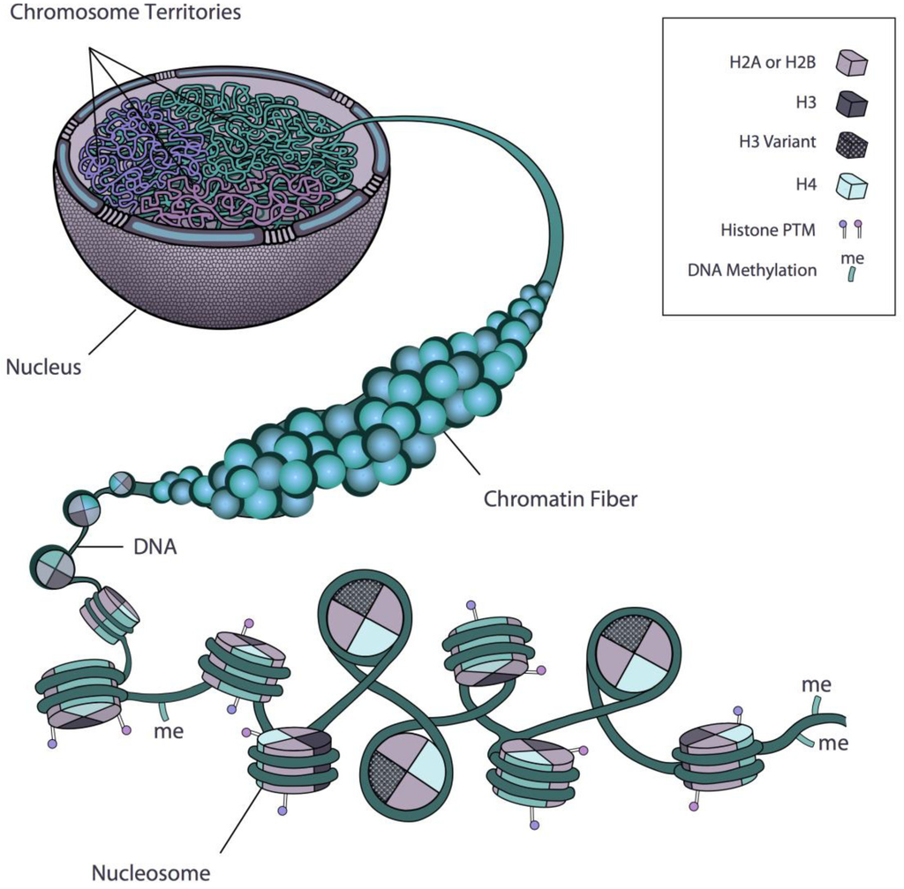

## {{ page.title }}
---
## Course overview
- Course website: https://cphg.github.io/compbio/
- Quizzes
- Programming assignments
---
## Introduction to computational biology
What is computational biology?
bioinformatics?
---
## History of biology + computers
- 1950-1960s Margaret Dayhoff
- 1970 First use of term bioinformatics (in dutch)
- 1974 "Biocomputing" gains popularity
- 1982 GenBank is founded
- 1985 Computer Applications in the Biosciences
- 1988 FASTA published
- 1988 NCBI is founded
- 1993 Intelligent Systems in Molecular Biology (ISMB)
---
# 1969
---
# 1969
---
# 1969
---
# 1970
Bio-informatics
---
---
# 1974
Computers can be used for:
1. information retrieval
2. data accumulation
3. data analysis
4. systems analysis
5. simulate biological phenomena
6. control experiments
7. course review
---
# 1982
Genbank started by Walter Goad
at Los Alamos National Laboratory.
---
---
---
---
---
---
---
# 1988
The NCBI was created by
the Health Omnibus Extension Act P.L.100-607
with $8 million.
---
---
## What is bioinformatics?
Early applications include:
- Structural biology
- Phylogenetics
- Data management and databases
- Systems analysis
- Software
- Simulation
- Artificial Intelligence
---
## What is bioinformatics?
History is intertwined with:
data
computer hardware
genome sequences
---
> the study of information processing in biological systems. Hesper and Hogeweg (1970)
---
> The NIH Biomedical Information Science and Technology Initiative Consortium agreed on the following definitions of bioinformatics and computational biology recognizing that no definition could completely eliminate overlap with other activities or preclude variations in interpretation by different individuals and organizations. (Huerta 2000)
---
> Bioinformatics: Research, development, or application of computational tools and approaches for expanding the use of biological, medical, behavioral or health data, including those to acquire, store, organize, archive, analyze, or visualize such data.
---
> Computational Biology: The development and application of data-analytical and
theoretical methods, mathematical modeling and computational simulation techniques to the study of biological, behavioral, and social systems.
---
> an interdisciplinary field that blends computer science and biostatistics with biological and biomedical sciences such as biochemistry, cell biology, developmental biology, genetics, genomics, and physiology. Bioinformatics emerged as an important discipline shortly after the development of
high-throughput DNA sequencing technologies in the 1970s (Moore 2007)
---
> Bioinformatics is conceptualizing biology in terms of macromolecules
(in the sense of physical-chemistry) and then applying “informatics” techniques (derived from disciplines such as applied maths, computer science, and statis-
tics) to understand and organize the information associated with these molecules, on a large-scale. (Luscombe et al. 2001)
---
> Bioinformatics can generally be defined as the study of how information technologies are used to solve problems in biology. The precise definition of bioinformatics is a matter of some debate. The most narrow usage of the term refers to the creation and management of biological databases in support of genomic sequences. The most broad usage includes essentially all applications of computers and information sciences to problems in biology. (Altman 1998)
---
---
### Early history of genomics
- Discovery of DNA (1871)
- Discovery of nucleotides (1910)
- DNA is the genetic material (1944)
- Discovery of structure of DNA (1953)
- The central dogma (1957)
See https://www.yourgenome.org/facts/timeline-history-of-genomics
---
Image credits: Genome Research Limited
---
### Genomics is intertwined with sequencing technology
> DNA sequencing is the process of determining the *sequence* of nucleotides (ACTG) in a strand of DNA
DNA sequencing = measurement (like a microscope)
---
### History of genome sequencing
- Sanger sequencing (1977-1980)
- The [Human Genome Project](https://www.genome.gov/human-genome-project) (1990-2003)
- The [ENCODE project](https://www.genome.gov/Funded-Programs-Projects/ENCODE-Project-ENCyclopedia-Of-DNA-Elements) (2003-2021)
- Sequencing by synthesis (2008-2012)
- Single-molecule sequencing
- 100k genomes sequenced
---
1977: Sanger sequencing
Chain Termination Method
2001: Human genome
Image credits: Wikipedia
---
### 2008: Sequencing by synthesis
Illumina
---
### Single-molecule sequencing
### Contrasting sequencing platforms
- Size of machine
- Length of reads
- Number of reads
- Cost of machine
- Cost of reads
- Accuracy of reads
- Technician time
---
### Sequencing costs
databio.org/seqcosts
---
### Sequencing
- Sequencing technology doesn't just measure DNA
Genome → transcriptome → epigenome
Convert what you want to measure to DNA, then use DNA sequencing technology.
---
### Transcriptomics
> The study of the RNA molecules produced by a cell.
Complementary DNA (cDNA) is a DNA copy of a messenger RNA (mRNA) molecule produced by reverse transcriptase, a DNA polymerase that can use either DNA or RNA as a template. (Encyclopedia of Genetics)
---
### Epigenomics
> The study of the chemical modification and physical conformation of cellular DNA and bound proteins
---
 Protocols: Bisulfite-seq, ChIP-seq, ATAC-seq, Hi-C Rosa et al. 2013
---
## What is Bioconductor?
Source: [software carpentry](https://github.com/carpentries-incubator/bioc-project
)
1. A repository of R packages for biology
2. A core project with core maintainers
3. A community
---
## What is Bioconductor?
- Started in 2001
- NIH-funded
- Core packages maintained by the project
- Contributed packages maintained by the community
- 6-month release cycle
---
## Package types
- *Software* packages are the heart of Bioconductor
- *Annotation* data packages provide self-contained databases of diverse genomic annotations
- *Experiment* data packages provide self-contained datasets that are often used by software
- *Workflow* packages collect vignettes that demonstrate the combined analysis, but do not provide any new source code or functionality themselves.
---
## Dig in!
1. How many packages does the current release of the Bioconductor project include?
2. How many packages of each type does this number include?
---
## What are biocViews?
- a set of terms from a controlled vocabulary
- used to classify Bioconductor packages
- can help you find useful packages for your use case
---
## Dig in!
In the RNASeq category, two very popular packages are `DESeq2` and `edgeR`. Which one is more popular in terms of download statistics (i.e., lower rank)?
---
## Core packages
The [core team](https://www.bioconductor.org/about/core-team/) maintains the project. A project core provides:
- unified build system
- cohesion of releases
- interoperability of packages
- training materials
---
## Community Resources
- Course materials:
- Support site:
- Mailing list
- Slack channel
---
## Installing Bioconductor packages
```R
install.packages("BiocManager")
BiocManager::install("GenomicRanges")
```
This can also handle CRAN packages
---
## Core package: Biostrings
```R
BiocManager::install("Biostrings")
library("Biostrings")
DNAString("ATCG")
dna1 <- DNAString("ATCGCTTTGA")
matchPattern("GM", dna1, fixed = TRUE)
matchPattern("GM", dna1, fixed = FALSE) # allow ambiguity
```
---
```R
adapters = readDNAStringSet(filepath = "TruSeq3-PE-2.fa")
```
```R
DNAStringSet object of length 6:
width seq names
[1] 34 TACACTCTTTCCCTACACGACGCTCTTCCGATCT PrefixPE/1
[2] 34 GTGACTGGAGTTCAGACGTGTGCTCTTCCGATCT PrefixPE/2
[3] 34 TACACTCTTTCCCTACACGACGCTCTTCCGATCT PE1
[4] 34 AGATCGGAAGAGCGTCGTGTAGGGAAAGAGTGTA PE1_rc
[5] 34 GTGACTGGAGTTCAGACGTGTGCTCTTCCGATCT PE2
[6] 34 AGATCGGAAGAGCACACGTCTGAACTCCAGTCAC PE2_rc
```
---
## Documentation
Find documentation, vignettes, etc. on the website:
---
## Core package: GenomicRanges
```R
BiocManager::install("GenomicRanges")
```
GRanges stores a set of intervals plus sequence name.
IRanges stores a set of intervals over a range of integer coordinates, without sequence names.
So: A GRanges object is an IRanges object plus a vector of sequence names.
---
```R
demo_iranges <- IRanges(start = c(10, 15), width = c(10, 5))
demo_iranges
```
```R
IRanges object with 2 ranges and 0 metadata columns:
start end width
[1] 10 19 10
[2] 15 19 5
```
---
```R
demo_granges <- GRanges(
seqnames = c("chr1", "chr2"),
ranges = IRanges(
start = c(10, 20),
end = c(25, 35))
)
demo_granges
```
```R
GRanges object with 2 ranges and 0 metadata columns:
seqnames ranges strand
[1] chr1 10-25 *
[2] chr2 20-35 *
-------
seqinfo: 2 sequences from an unspecified genome; no seqlengths
```
---
## Other popular packages
- SummarizedExperiment - a data structure for one or more assays, each represented by a matrix-like object of numeric or other mode. The rows typically represent genomic ranges of interest and the columns represent samples.
- limma - Data analysis, linear models and differential expression for microarray data.
- BiocFileCache - creates a persistent on-disk cache of files for managing resources that are costly or difficult to create.
---
## Other popular packages
- GenomicAlignments - efficient containers for storing and manipulating short genomic alignments (
clusterProfiler -
- SingleCellExperiment - class for storing data from single-cell experiments
- ComplexHeatmap - provides a highly flexible way to arrange multiple heatmaps and supports various annotation graphics
---
### Conclusion
It's an exciting time for computational biology.
The world is starving for people who can apply advanced computation to growing biological data.